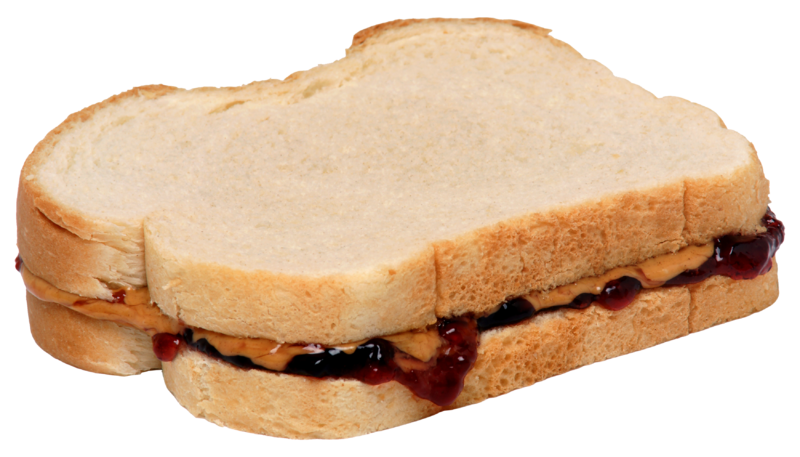

Peanut Butter and Jelly

Let's learn how to make a
peanut butter
and jelly sandiwch
Ingredients:
Instructions:
- Lay out 2 slices of bread.
- Spread peanut butter on one slice.
- Spread jam on the other slice.
- Stick the two slices together and enjoy!
Why You Need to Learn How to Make a Peanut Butter and Jelly Sandwich:
As humans we are always told to break the fast. Breaking the fast with a
proper meal such as PB&J, is what sources most of your energy throughout
the morning. Try it!
Aight NVM, got it!